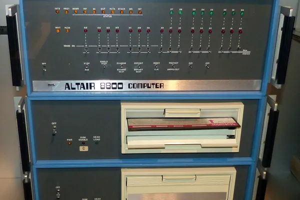
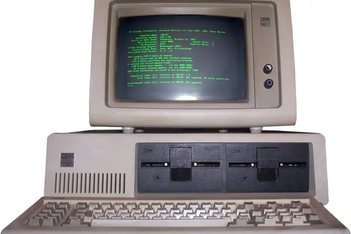
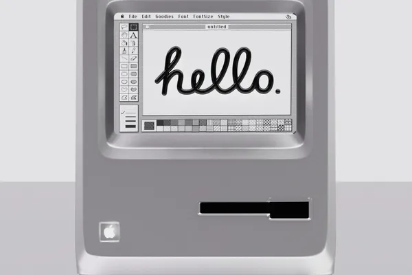
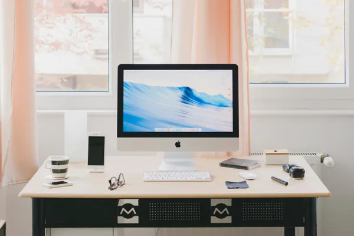

1. The Dawn of the Personal Computer
The personal computer (PC) revolution began in the mid-1970s, with early pioneers like the Altair 8800 and the Apple I. While these machines were primarily aimed at hobbyists and tech enthusiasts, they marked the beginning of a technological shift that would soon reach millions of homes.
In 1977, the launch of the Apple II and the Commodore PET helped popularize the idea of personal computing. These early PCs introduced many households to the concept of having their own programmable device, rather than relying on mainframe or shared computers.
2. The Rise of the IBM PC and Competition
The true turning point came in 1981 when IBM introduced its first personal computer, the IBM PC. Powered by an Intel 8088 processor and running Microsoft’s MS-DOS operating system, the IBM PC became a standard for the rapidly growing market.
Competitors like Apple, Atari, and Commodore developed their own systems, driving innovation. This period saw a surge in accessibility, with prices dropping and software like word processors, spreadsheets, and games making the PC essential for both work and entertainment.
3. PCs Enter the Mainstream
By the late 1980s and early 1990s, personal computers were becoming increasingly common in households around the world. Advancements in user-friendly graphical interfaces, like Microsoft Windows and Apple’s Mac OS, made PCs more accessible to non-technical users.
The launch of the Macintosh in 1984, with its iconic graphical interface and mouse, changed how people interacted with computers. It paved the way for everyday users to perform tasks like word processing, desktop publishing, and basic programming from the comfort of their own homes.
4. The Digital Home Office and Gaming Revolution
As PCs became more powerful and affordable, their uses expanded beyond just work-related tasks. The rise of the Internet in the 1990s allowed households to connect with the world like never before. At the same time, the gaming industry exploded, with PCs serving as platforms for iconic games like "Doom," "SimCity," and "Myst."
The ability to run businesses, study, and play games from a home computer turned the PC into a central hub of daily life. During this period, the personal computer evolved into a staple of modern households, forever changing how we work, learn, and socialize.
5. The PC in the Modern Household
Today, personal computers have transformed into laptops, desktops, tablets, and even smartphones, seamlessly integrated into our daily routines. Whether used for work, entertainment, or connecting with others, PCs have revolutionized the way we live, making digital technology an indispensable part of every home.
As we look forward, the PC continues to evolve, adapting to new technologies like cloud computing, AI, and virtual reality, ensuring that it remains a crucial tool in households worldwide.